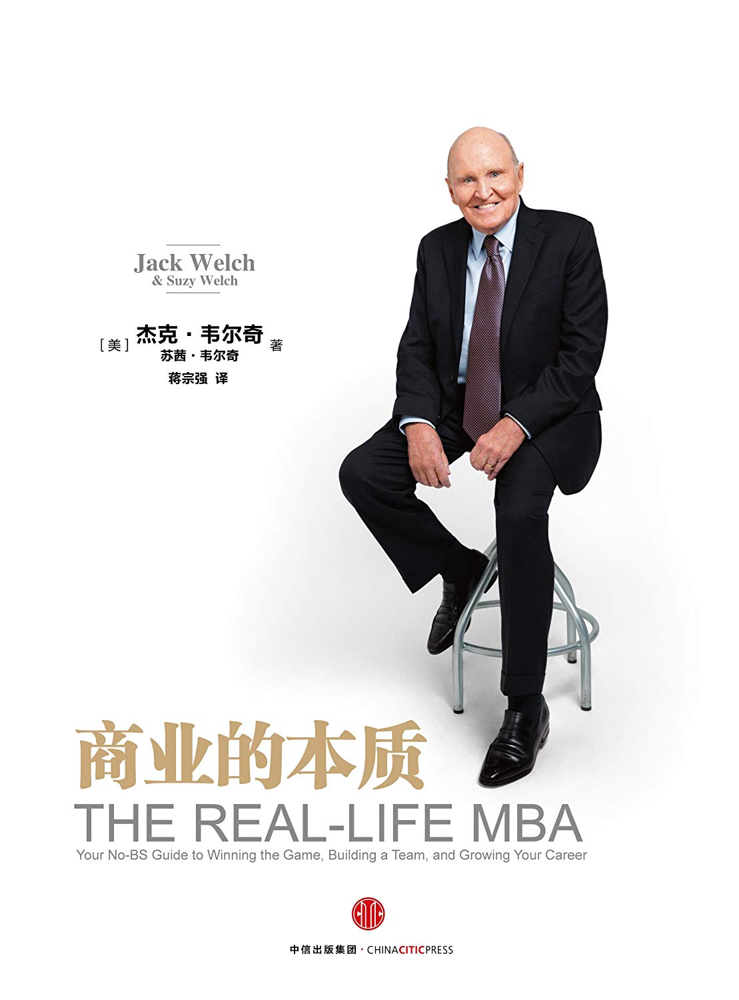

注：【】部分为笔者心得，非原文摘抄。
- 为了充实生命的意义，工作肯定是一个重要的途径。
- 如果你想摆脱工作中的痛苦，提升公司的协同力就是一条必由之路。
- 让使命、行动与结果协同起来。
- 在大部分情况下，私募公司都是收购步履维艰的企业，然后劳心费力地为其寻找卓越的领导者。往往它们做的第一件事，也是最重要的事，就是提升被收购企业的协同力。
- 最好的使命陈述就是要这样，既目标远大，能鼓舞人心，又切合实际。
- 一个好的使命会让每一名员工知道自己应该做什么，能让所有人为了实现共同的使命而协同奋斗。
- 如果一个公司能够真正地落实以客户为中心的使命，那么其员工的一举一动都会表现出同理心。
- 要对业绩增长拥有强烈渴望。这种增长不是个位数的增长。
- 你可以不厌其烦地向他人讲述你对于使命和行动的要求，但如果没有一个固定的落实机制，你的要求便无法落到实处。
- 没有落实机制的保障，你的话谁也听不进去。
- 一次人事变动比 100 次讲话更能有力地表明某些行动是否重要以及哪些行动是重要的。
- 发放大额奖金也是一种积极的鼓励手段。
- 如果一个公司领导者任由公司使命摆在那里，等待别人去理解、去实现，那么公司就会错失很多大好机遇。领导者应该阐明使命，明确指出员工应该采取哪些行动，然后评估和奖励那些表现出色的员工。
- 领导力对激发协同力、消除工作中的痛苦具有关键作用。
- 在绝大多数情况下，如果一个停滞不前的公司想要焕发出新的领导力，那么管理者就必须重建公司的使命、价值观以及结果评价体系，这两者绝对是密不可分的，必须相辅相成。
- 领导者要体谅下属。
- 最优秀的领导者在涉及利益时应先人后己。
- 伟大的领导者用语言和行动建立互信和公信力。
- 在很大程度上，领导者存在的意义就在于让团队找到正确的目标，并持之以恒、充满激情地向下属解释这个目标，告诉他们我们正处于什么境地，为什么会这样，我们将奔向什么目标，你在此过程中的位置是什么，你应该做些什么。
- 领导者要为下属的前进道路扫除障碍。
- 领导者要愉快地展示“慷慨基因”
- 没有什么比领导者发自肺腑的慷慨（既包括慷慨地给予表扬，又包括慷慨地给予涨薪）更能提升员工业绩和忠诚度了。
- 领导者要确保让下属快乐工作。
- 最好的防御是进攻。
- 越害怕危机，越容易陷入危机，因为思想涣散、惊恐不安、郁闷沮丧的人什么事情也做不成。
- “冠军”的共同特点就是工作起来近乎疯狂，具有永不言败的心态和精益求精的激情。
- 如果留不住那些最优秀的人才，你永远不可能摆脱困境。
- 只有可以为行动提供借鉴的数据才是有用的数据。—— 特里·莱希爵士（Sir Terry Leahy），英国乐购集团（TESCO）前首席执行官
- 让公司跳出自身的限制，看清外部的环境。
- 很多人在制定战略时往往会过于注重眼前，而低估了竞争对手的未来前景。
- 在制定战略的问题上，保持敏捷的反应真的很重要。
- 有效的战略制定过程讨论的是关于未来以及市场的内容，比如今天、明天和一年之后的消费者与竞争对手，不久之后可能会出现的新技术，尚未被发明出来的产品，日益迫近的社会与政治事件等等。只要是尚未发生的，你都可以一一列举出来。
- 让每次关于战略的对话回归到市场方面。
- 公司不应该只在灾难面前才开始反思自己的组织结构图，反思谁应该对谁汇报工作以及多久汇报一次。
- 在现代社会里，任何一个公司都应该重视 IT 部门和风险管理部门，要招聘这些方面的优秀人才。
- 真正愚蠢的是因自己有所担忧而焦虑不已！只要能弄清楚自己在担忧什么，并敢于面对，就是明智的担忧！
- 在商业领域，一旦有所担忧，往往就是一个信号，预示着你将要遭受创伤。
- 正确的方式会让你找出担忧的原因，并消除担忧。毕竟，直面自己的担忧比直面创伤好得多。
- 如果你将要遭遇创伤，要勇于面对，越挫越强，如果浪费这个自我反思的好机会，那着实是一件令人遗憾的事。
- 当某个目标对你很有挑战性时，就像目前实现增长的挑战性一样，你的职责就是让你的团队振作起来。
- 只有当公司实现了增长，员工才有职业安全感。
- 在商业经营过程中，很大一部分乐趣来自公司的增长。
- 提升公司的协同力，让公司所有员工围绕着统一的使命和价值取向而努力；提升领导力，激发员工提高业绩和加强创新的能力；认真分析影响成本和业绩的数据；采用快速、敏捷的战略制定过程；建立现代化的组织结构；让你的担忧更有意义。
- 有力地促进公司业绩的增长。具体来讲，是 6 个工具：为公司注入新鲜血液；要集中资源，不要分散资源；重新定义创新，让每个人参与其中；利用最优秀的人才实现增长计划；为员工提供合理的薪酬；通过任何必要的手段拉拢那些抵制增长计划的人。
- 如果你希望公司业绩有所增长，不管你的公司规模有多大，也无论你的公司处于什么位置，无论是领导一个团队，还是领导一个部门，请记得为公司注入新鲜血液，引入全新的视角。
- 发挥创造力，而不是被有限的资金束缚住手脚。
- 在商业领域，最好将创新定义为每个人都可以做到的“渐进式改进”，只有这样，才最有可能实现创新。
- 永远不要为了奖励员工而请其与老板共进晚餐，因为无论老板这个人多么奇妙而有趣，跟老板一起吃饭依然属于工作。
- 提升公司业绩的各种机遇存在于每个人身上，每个人都是平等的，即便你不必是一个天才般的人物，同样能给自己的公司留下有意义的印记。
- 如果你希望提升公司业绩，那就必须用最优秀的人才为公司启动增长引擎。
- 大数据可以告诉你很多事情，但其最佳的用途是帮助你把精力集中在能够真正促进增长、降低成本的事情上。
- 在一个缓慢增长的世界中，要刺激一个公司实现快速增长，与时俱进的薪酬体系也是一个制胜之举。
- 优秀的领导者应该像擦扫冰面的选手一样，竭尽全力地帮助下属扫除前进道路上的障碍。我们所说的障碍，是指愚蠢的官僚主义造成的困难和桎梏。
- 尽力拉拢那些抵制新增长计划的人。识别他们，化解他们的不满，然后使他们改弦更张。
- 每一个增长计划都会面临激烈的外部竞争，领导者的职责（我们指的是各个级别的领导者）就是确保在公司内部不存在任何竞争。
- 对于企业而言，业绩增长是至关重要的，只有这样，工作才富有意义和乐趣。
- 如果你的产品和技术不具有独特性，那么品牌强大也可以大大缓解由此造成的负面作用，推动你创造出一个互利共赢的局面。
- 要创建一个全球性的公司，互利共赢才是关键。
- 如果你想看到一个你与当地合作伙伴互利共赢的局面，绝不能一到两年就换掉一批驻外管理人员。
- 洞察力是外派人员应该具备的一个最重要的素质。
- 洞察力就是同时具备商业头脑、文化敏感性和古老的智慧。
- 洞察力的表现形式包括良好的判断力和自信。
- 私下惩罚贿赂者是没有意义的，起不到警示作用。
- 全球市场不只是用来出口或采购的，它们也有助于促进学习和创新。
- 让每一次合作实现互利共赢。只外派具有洞察力的人才；认真做好风险管理；不要单纯地把海外业务视为海外业务，要认识到它们是扩张和创新的前哨。
- 业绩增长是所有公司长期生存能力的关键，所以客户满意度是第二重要的指标。
- 经理需要去拜访那些订单量不稳定或下降的客户，这些客户都是销售人员不愿意去拜访的。在拜访客户过程中要注意总结经验与教训，并从多个角度反思：“我们如何才能做得更好？”
- 净收入是通过损益表计算出来的，而损益表中包含太多的假设和主观判断。
- 现金流可以帮助你了解并掌握公司的命运。
- 资产负债表总结了一个公司的资产、债务及其股份持有人拥有的股权，表明了这家公司的资产、负债以及个人和市场的投资量。之所以称之为资产负债表是因为其资产和负债均陈列出来，相互平衡。
- 资产负债表就是关于一家公司在某个时期内财务灵活性的状况图景。
- 销售额和净收入都是需要持续审查的重要数据。
- 营业毛利润率和流动资金周转率上的季度差异是最好的指标，它们可以表示一家企业的效率走向。
- 面对数据，你要逐一审阅，认真分析，要敢于质疑它们的来源以及背后原因，并且探讨一下这些数据的变动趋势以及会引起什么结果。
- 从不同观点中探求真实情况，是差异分析的一个重要意义。
- 市场营销最核心的内容，即合适的产品、合适的渠道、合适的价格、合适的宣传信息和合适的营销团队。
- 5P 理论：要进行有效的消费者营销，需要选择合适的产品（product）、渠道（place）、价格（prize）、市场推广方式（promotional messaging）和最重要的营销团队（people，也就是企业的运行基础）。
- 当谈到渠道的时候，要考虑的问题并不是“我们能通过多少渠道来吸引人们的注意力和购买欲望”，而是“我们应该选择哪些渠道才能卖出最多的产品从而获利”。
- 产品是否能够方便地进入市场具有重要的意义。
- 一套成功的营销方案已经不仅仅是有创意就够了。更重要的是在定价方面对这个创意进行测试。
- 体验式营销指的是通过创造消费者“体验”来提高曝光率、共享性和品牌价值，最终提高销量的一种方法。
- 宣传推广中，新奇的就是最流行的。
- 人们天生喜欢与理解自己思维方式以及优先事项相同的人打交道。
- 单枪匹马会扼杀速度，扼杀想法，扼杀影响力。
- 营销必须融入或是帮衬公司的每个职能。
- 公司应该尽自己所能将 B2B 关系保持在非常私人的层面上。
- 营销关系也必须建立在信任的基础上。双方都必须感觉到这种关系是互利共赢的。
- 在 B2B 营销中所做的每一件事，均要依据对工业生产能力的仔细分析。
- 如果你想在行业里立稳脚跟、大显身手，你唯一的招式便只能是具有压倒性优势的服务。
- 一旦一个公司爆发公关危机，其内部的各级工作人员都难以幸免。
- 危机管理原则
- 第一，无论你多么努力地控制危机，它最后总是比你想象得更大、更深刻。
- 第二，这个世界上不存在秘密之类的东西。
- 第三，媒体可能会极力丑化你处理危机的方式。不要怕，勇敢面对，把你的真实想法告诉记者
- 第三，媒体可能会极力丑化你处理危机的方式。不要怕，勇敢面对，把你的真实想法告诉记者。
- 第四，在处理危机的过程中，要对公司内部的人事安排和工作流程进行变革。
- 第五，也是最后一条，如果应对得当，你的公司会在危机中生存下来，之后将变得更好、更强大。
- 社交媒体的乘数效应使得企业和个人的每一个错误（有时甚至是主观臆测的错误）传播得更快，看起来更丑陋。
- 在商业领域，大多数试图隐藏秘密的做法都适得其反。
- 公司领导者之所以要努力构建健康的公司文化和价值观，促进员工的正直和坦率品质，一个很重要的目标是预防危机。
- 公司与外界打交道时应该遵守的几个原则：
- 第一个原则是，在卷入危机之前就积累商誉，以备不时之需。
- 第二个原则是，利用“多渠道”向公众发出响亮的声音，即便没有紧急的事情要讲，也要这么做。
- 第三条原则是，要善待离职员工，不要让自己的愚蠢之举引发危机。
- 第四条原则是，一切终将过去。在危机发生后，要记住这条确定无疑的法则。
- 人们会忘记你所说，忘记你所做，但会铭记你给他们的感觉。—— 马娅·安杰卢（Maya Angelou）
- 简单地讲，领导力的内涵或许可以概括为下面两个方面： 1.真实和信任。 2.不断地探求真实，不懈地建立信任。
- 最高效的领导者应该展现出活力（energy）、鼓动力（energize）、执行力（executive）和决断力（edge），所有这些都离不开激情（passion）。
- 追求真实和打造信任是领导者应该坚持的两个底线。
- 定期的绩效评估是每个管理者必须承担的责任。
- 永远不满足于假定和承诺，如饥似渴地探索真相，排除一切倾向性意见，由此及彼，由表及里，无论最终收获的是荣耀还是伤痛，无论你是否喜欢，真相都会展现在你面前。
- 根据公司实际情况进行深刻探讨，而不必想着如何去取悦于外面的证券分析师，就会为战略制定过程创造一个全新的环境。
- 在商业领域，求真务实的态度是一个具有竞争力的武器，能够提高公司的运作效率，提高公司的公平性、灵活性和创新性，让公司成为一个令员工向往的工作场所，员工也愿意为公司竭诚奉献。
- 如果你与下属之间没有信任，那么你永远不会得到真相。
- 追求真相是领导力的本质要求。
- 领导者要建立互信，要做的就是“当员工点儿背的时候，你要成为他的后盾”。
- 领导者不要抢走下属的功劳。
- 真正有助于建立互信的倾听是在困难时期的倾听。
- 如果你要让下属明白某些行为的重要意义，那么你可以经常树立这种榜样，而且这种榜样的示范出现得多么频繁都不为过。
- 如果在公开辩论中让下属保持沉默，那么很多下属可能都会觉得自己的权利被剥夺了。
- 如果领导者同一个下属讨论另一个下属的是非，也会破坏信任。
- 领导者要博得下属的信任，必须严格保守内心的秘密，无论是在公开对话中，还是在私下的对话中，都要明确表示所有人都平等地属于同一个团队。
- 领导者不仅不能对一个下属谈论其他下属的不是，还不能就公司的事情在不同人面前发表不同的看法。
- 领导者需要对不同的人发表对最新业务状态的看法，如果做不到前后一致，就会对自己的公信力造成巨大的打击。
- 真正善于博得下属信任的领导者对每一个人发表的看法都是相同的。
- 谈判需要的是同理心。
- 思想开明、心胸开阔地参加谈判，才能真正开展有意义的对话。
- 关爱离职的员工是正确的做法。事实上，在离职那天，要像他入职那天去关爱他。
- 在每一个决定和每一个行动中，都要不断地追求真实，不断地建立互信，在此基础上领导自己的团队。
- 要打造一个优秀的团队，必须先招聘到优秀的队员。
- 如果外部招聘的正确率超过 60%，内部提拔的正确率超过 80%，那么你就能跻身超级英雄的行列了。
- 要勇于承认和面对自己在招聘过程中的失误，不要为了防止上司或同事发现自己的招聘失误，或为了防止新人工作出错而把新人的工作揽到自己这里。
- 承认失误反而能为你博得尊重。
- 无论应聘者在其他方面表现得多么优秀，多么有吸引力，“诚信”都是一个具有“一票否决”作用的先决条件。
- 招人时要谨小慎微。
- 要警惕那些没有认识到自己只是一个普通人的人。
- 幸福的员工才对工作有热情。
- 消除公司里单调乏味、愚蠢压抑的官僚主义风气和等级制度，不要让员工把大量精力耗费在琐碎繁重、没有意义的工作上。
- 人力资源开发与培训工作是让员工产生幸福感的一个必由之路。
- 人力资源管理部门必须具有公信力。这样它才不至于影响公司发展的速度。
- 人力资源管理部门的真正职能不是做行政工作，而是纯粹地以人为本，是发现、培训、激励和留住优秀人才。
- 商业依靠的是团队力量。
- 一旦存在“不正直”的员工，处理起来必须迅速、严厉和公开。
- 如果你是一个领导者，你的部分职责就是承认很多下属经常生活在担心之中。你要敢于面对这个现实，这也是你的分内之事。
- 如果双方碰巧具有相同的价值观，那么彼此之间也比较容易建立互信。
- 最好的技术人员讲的是‘双语’。他们的科技术语说得很流利，这是自然而然的，而他们的商业语言说得也很流利，他们能够理解和接受公司的使命和价值观，明白哪些活动有利于公司提高收入和降低成本。他们担心竞争。他们以强烈的主人翁意识去看待公司的业绩数字。
- 技术经理必须关心最后期限、盈亏线和产品线的问题，必须实事求是，对公司的经营状况做出全面分析。
- 如果你需要管理在家工作的人，那么你的脑海里应该回荡着“社会化”这个词。要充分利用一切可用的技术，和他们保持联系，并且能够管理不同国家的自由职业者。他们不在你的视线中，并不意味着不在你心中。
- 作为领导者，你最宝贵的资源就是你的精力，所以，把你的精力放在关心那些顶尖的人才，关心那些有潜力加入你团队的人身上吧。
- 要和员工探讨一下他们在担心什么，告诉他们真正需要担心什么以及哪些担心只是受谣言或猜测的误导。
- 如果员工对一切问题都无知，就会陷入长期的恐惧，不利于提高工作效率。
- 我们唯一应该恐惧的就是恐惧本身。”这句话是很正确的。作为一位领导者，你的工作职责就是消灭恐惧，无论经营环境好坏，都要不断地探求真实的情况。
- 作为一位领导者，你的工作职责就是消灭恐惧，无论经营环境好坏，都要不断地探求真实的情况。
- 对于浪费时间和精力的员工，则要用坦诚和勇气坚决回击。
- 生命中两个最重要的日子就是你出生的那一天和你懂得生存的意义的那一天。—— 马克·吐温
- 要成为一个企业家，你需要极大的勇气、疯狂的激情和超出理性范畴的决心，忍受反复出现的近乎死亡的体验。
- 超额完成，意味着将你老板头脑中的预期升华到一个全新的水平。
- 正直加上领导力，要想升职绝对不费力。